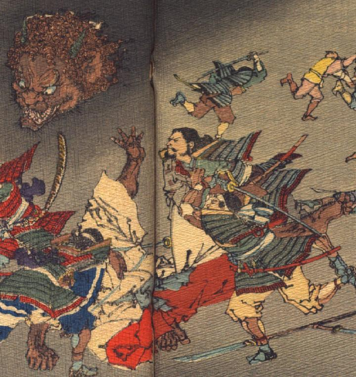

酒呑童子。武士達に襲われて、体から切り落とされた頭部が宙を飛び、武士に襲い掛かろうとしている。頭に縮れた髪が生え、額に2本の角が生えている。耳は大きく、目はつりあがり、鼻は潰れている。口は横にさけ、口ひげとあごひげがまばらに生えている。体は白い着物と赤い袴をまとっている。地面に倒されて、片腕片脚を上げて、もがいている。
出典：親書誌：U426_nichibunken_0113：Les Ogres d'Oyeyama／日付：2006／資源識別子：U426_nichibunken_0113_0006_0001
Copyright (c)2010- International Research Center for Japanese Studies, Kyoto, Japan. All rights reserved.